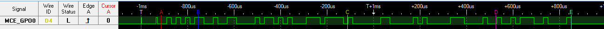

Packet format debugging¶
When testing a custom packet format, it is often convenient to see what the
CC2640R2F sends on the air. The RF core provides the internal signal
MCE_GPO0 which reflects the binary modulator input.
Figure 45. shows a pin dump for a packet with the
following configuration:
.preamConf.nPreamBytes= 1.syncWord= 0x930B51DE.pktConf.bVarLen= 0x0- payload: 4 bytes: { 0x81, 0x82, 0x83, 0x84}

Figure 45. Output of the internal modulator signal MCE_GPO0 dumped with a logic
analyer.
The triggers represent the parts:
- Preamble
- Sync word
- Payload
- CRC
- End
There are signal fragments at the beginning of the packet which need to be
filtered out. The following code snippet routes MCE_GPO0 to
Board_LED1:
#include <inc/hw_rfc_dbell.h>
// Overrides for CMD_PROP_RADIO_DIV_SETUP
static uint32_t pOverrides[] =
{
// Route MCE_GPO0 to RFC_GPO0
HW_REG_OVERRIDE(0x1110, RFC_DBELL_SYSGPOCTL_GPOCTL0_MCEGPO0),
// ...
}
#include <ti/drivers/pin/PINCC26XX.h>
// Route RFC_GPO0 to an LED
PINCC26XX_setMux(ledPinHandle, Board_LED1, PINCC26XX_MUX_RFC_GPO0);
More information on signal routing can be found here.